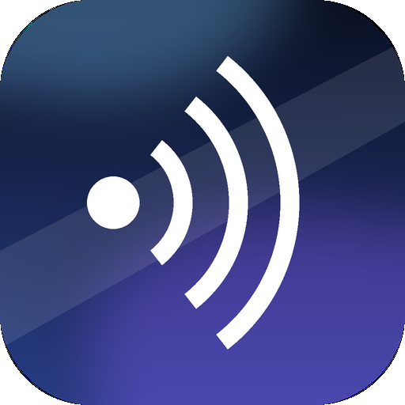
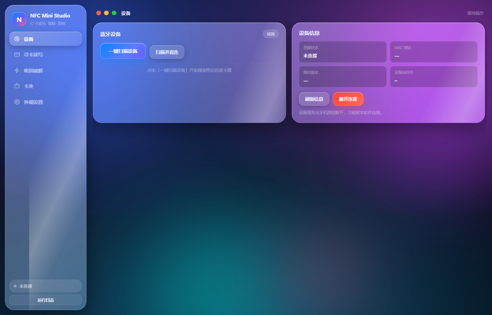

NFC Mini
Studio
把只在微信小程序里能用的蓝牙读卡器，搬进 Windows 桌面。
读、写、复制、破解，一个窗口全干完。
▼ 滚动或按方向键继续
一块能干活的读卡器，被一个微信小程序锁住了
NFC Mini 2.0 这块读卡器本身没问题，蓝牙连上就能读能写。麻烦的是它只有小程序一个入口：先开微信，再连手机，然后盯着几寸屏幕一下一下点。想批量导几张卡，手指先酸了。
所以把它私有蓝牙协议拆出来，重新写了个桌面端。现在它是一份 28 MB 的安装包，双击装好，插上读卡器就能用，不用再经过谁。
打开就是这个样子
- 左侧竖排导航共五项：设备、寻卡读写、密钥破解、卡夹、外观设置
- 底部常驻连接状态与运行日志入口
- 深色液态玻璃卡片，圆角，背景可换
- 顶部是 macOS 风格的窗口控制，窗口大小、透明度都能调

六个模块，把一张卡的路走完
扫描连接
扫到附近设备，点一下自动连，直接读出版本、SN、信号强度。
寻卡
实时喊卡，返回卡类型、UID、SAK，UID 卡也能认。
IC 卡读写
16 扇区可视化网格，逐块读、逐块写，密钥 A / B 认证。
复制 / 粘贴
整卡 dump 存进卡夹，再一键写回新卡，克隆一步到位。
密钥破解
四种算法轮流上，支持批量恢复密钥。
卡夹
卡片数据本地留档，随时读取、改名、再次写入。
四层分工，前端只管好看，后端只管干活
液态玻璃 UI，跑在 WebView2 里，改样式不用重编译。
前端与 Python 之间唯一的通道，所有能力以 js_api 方式挂出去。
api.py 对外接口 · device.py 设备逻辑 · protocol.py 协议编解码 · store.py 设置与卡夹
BLE GATT 收发：服务 FFE0 / 写 FFE2 / 通知 FFE1。
这套协议是小程序里拆出来的
错误码也一并还原了：0 成功 · 7 寻卡失败 · 8 认证失败 · 9 读失败 · 10 写失败 · 17 检测不到卡片。出了什么问题，日志里直接给你答案。
16 个扇区摆出来，看得见才敢写
- 整卡按 16 扇区 × 4 块铺成网格，哪块读过、哪块写过一目了然
- 读写前先过 密钥 A / B 认证，没认证的块直接拒绝
- 每一次收发都进 运行日志，写错了一块立刻能追回来
- 绿灯那格就是当前操作命中的位置
克隆一张卡，三步
读出整卡
寻到卡，认证过，逐个扇区把数据读出来，在网格上看得到进度。
存进卡夹
整卡 dump 落到本地卡夹，起个名字，它就一直留着。
写回新卡
换上一张空白卡，从卡夹里选中，一键写完，完事。
卡夹里的数据全在你自己电脑上，落在 %APPDATA%\NFCMiniStudio，不经过任何服务器。
钥匙丢了，四种方法轮流上
staticnest
已知密钥相近时最快。
hardnested
陌生卡的主力算法，啃得慢但啃得动。
half_decode
拿一半线索推另一半。
FM11RF08S
针对这颗芯片的专用路线。
支持批量恢复：一次挂上 16 个扇区，跑完哪个通哪个不通，结果直接列出来，不用一个一个试。
提醒一句：这套功能只该用在你自己的卡上。拿它去开别人的门，跟我们没关系。
界面长什么样，你说了算
液态玻璃强度
毛玻璃的折射与模糊程度可调，从通透到厚重之间随便挑。
背景壁纸
自带几张，也能换自己的图。图片自动同步进前端目录，不用管路径。
窗口透明度
整窗透明度可调，压在别的窗口上面看着不碍事。
所有外观设置跟卡夹放在同一个本地目录，换机器拷过去就还是你习惯的样子。
两种装法，看你机器上留不留痕
一键安装包
- 图形界面，双击后点「一键安装」
- 自动建桌面 + 开始菜单快捷方式
- 写入卸载登记，可在系统设置里正常卸载
- 免管理员权限，安装盘符可改
- 支持 --silent 静默安装，方便批量部署
免安装版
- 整个文件夹拷到 U 盘就能走
- 不写注册表、不建快捷方式
- 适合临时用、或者放在多台机器上轮流跑
装好之后三步开跑：双击图标 → 插上读卡器 → 点扫描连接。环境只要 Windows 10/11 加 WebView2，Win11 自带，Win10 缺了系统会自己补。
几个能记住的数字
界面、后端、安装程序全部自己打包，build_all.py 一条命令跑完两步；源码运行 python run.py 就行，二次开发不用碰打包流程。
「连上了却用不了」先分清断在哪一段
扫描列表里没有它
- 读卡器没开机，或没进入广播
- 被手机微信小程序占着（BLE 单连接，谁先连谁独占）
- 距离过远，或被 USB 3.0 口干扰
列表里有，点连接就报错
- 设备仍被手机端持有，没真正释放
- 系统里留着旧的配对记录
- 上一次连接没清理干净，端口被占
连上了，命令没回音
- 点到了列表第一个设备，未必是读卡器
- 写/通知特征对不上，非 FFE2 / FFE1
- 连错设备时更要及时断开，别留悬挂连接
判定口径：只有握手成功，软件才会把设备 MAC 写进 settings.json 的 last_mac。它是空的，就说明这台电脑从来没完成过一次成功握手——问题在蓝牙链路，不在读写逻辑。
从一个小程序入口，变成桌面上一个双击就开的工具
它不复杂，就是把该在电脑上干的事，搬回电脑上干。
破解与克隆功能请仅用于自有卡片和合法授权场景。拿去做别的事，后果自负。